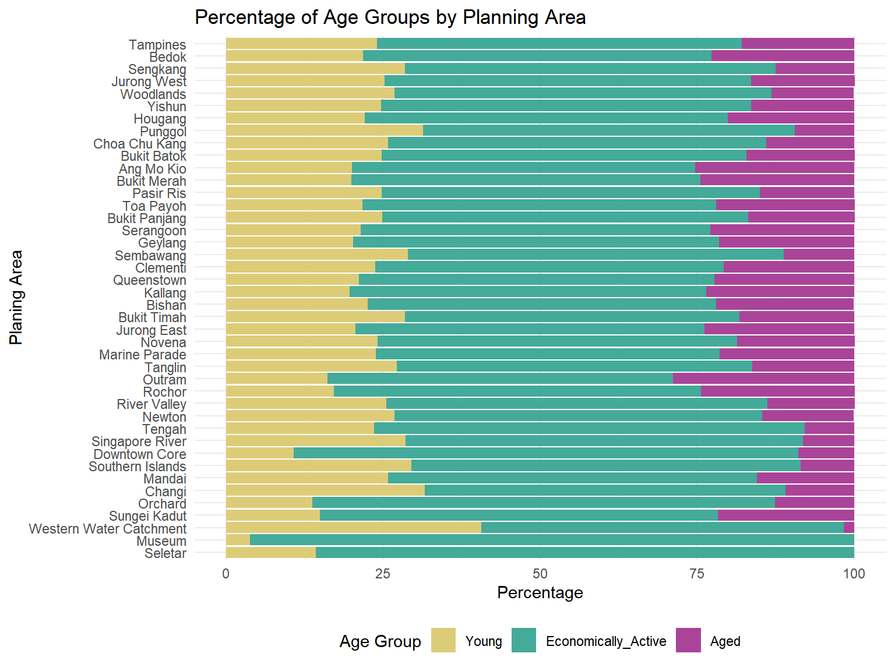
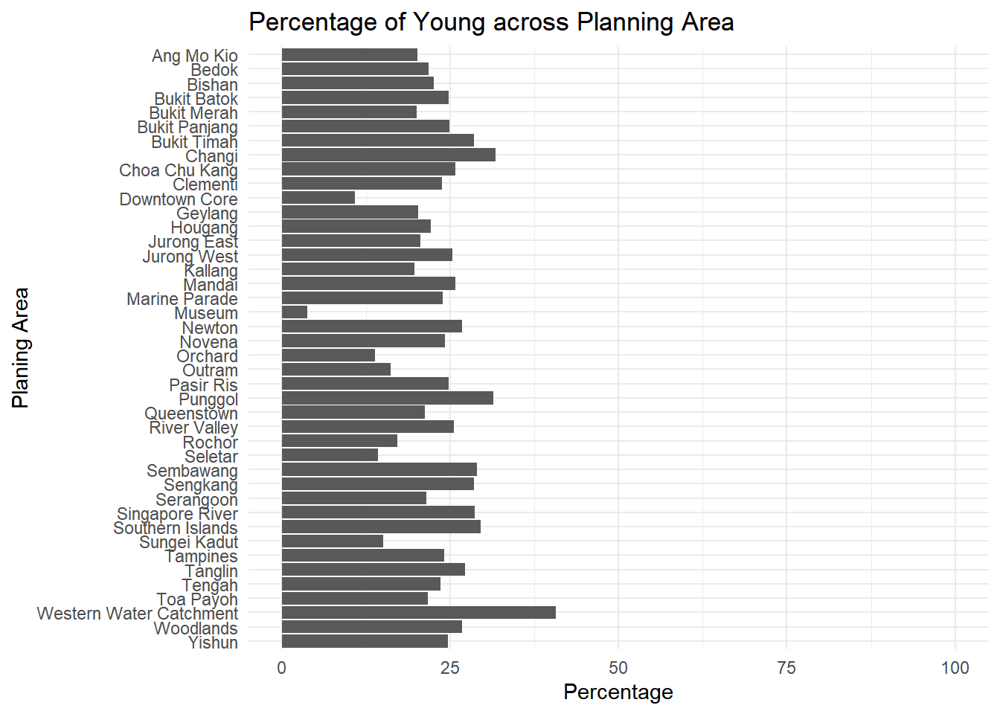
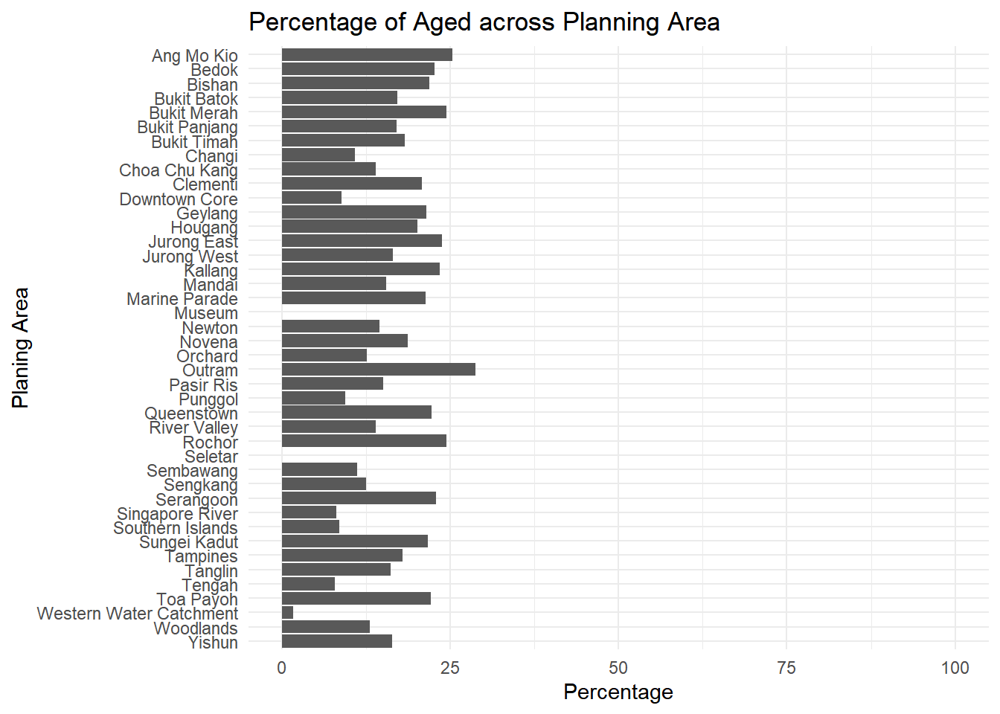

pacman::p_load(tidyverse, patchwork, ggthemes, knitr, cowplot)Take-Home Exercise 1-1: Demographic Structures and Distribution of Singapore in 2024
1-1: 1 Overview
This exercise will be composed of two phases:
- Phase 1: Designing my own data visualisation.
- Phase 2: Selecting one submission provided by my classmate, identifying three good design principles and critiquing three areas for further improvement. Based on these feedbacks, I will prepare the makeover version of their data visualisation.
This page will focus on Phase 1 of this exercise and Take-Home Exercise 1-2 will cover Phase 2.
1-1: 1.1 Background
A local online media company that publishes daily content on digital platforms is planning to release an article on demographic structures and distribution of Singapore in 2024.
Assuming the role of the graphical editor of the media company, I am tasked to prepare at most three data visualisation for this article.
Tip
Creating enlightening and truthful data visualizations involves focusing on accuracy, transparency, and the ability to effectively communicate insights. It is about presenting data in a way that is both informative and aesthetically pleasing, ensuring the audience can grasp the information quickly and accurately.
The data should also be processed by using appropriate tidyverse family of packages and the data visualisation must be prepared using ggplot2 and its extensions. In addition, no interactive data visualisation are required.
1-1: 1.2 Data Source
The data for this exercise is the Singapore Residents by Planning Area / Subzone, Single Year of Age and Sex, June 2024 dataset, retrieved by Department of Statistics, Singapore (DOS).
1-1: 1.3 Install and Load the Required Libraries
These, five R packages will be used for the preparation of this exercise:
- tidyverse: A collection of R packages designed for data science. It includes packages like dplyr, ggplot2, tidyr, and readr that simplify data wrangling and visualization.
- patchwork: An R package that allows users to easily combine multiple ggplot2 plots into a single composite layout, useful for comparative visual analysis.
- ggthemes: This package adds extra themes, scales, and geoms to ggplot2, making it easier to apply distinct themes to plots.
- knitr: A reporting package that integrates R code with markdown, enabling dynamic report generation in formats such as HTML, PDF, and Word, often used with R Markdown and Quarto.
- cowplot: An extension of ggplot2 that simplifies plot arrangement and annotation. It provides functions like ggdraw() and draw_plot() for overlaying and aligning plots, often used for fine-tuned visual layouts.
Code chunk below will be used to check if these packages have been installed and also load them onto the working R environment.
1-1: 1.4 Importing Data
For the purpose of this exercise, a data file called respopagesex2024 will be used. It consists of data about Singapore Residents by Planning Area / Subzone, categorised by a Single Year of Age and Sex,for June 2024. It is in a csv file format.
The code chunk below imports respopagesex2024.csv into R environment by using read_csv() function of readr package (under tidyverse).
1-1: 2 Exploratory Data Analysis (EDA)
There are a total of six attributes in the sg_data tibble data frame. Four of them are categorical data type and the other two are in continuous data type.
Categorical Variables
- PA: Planning Area
- SZ: Subzone
- Age: Single Year of Age
- Sex
Continuous Variables
- Pop: Resident Count
- Time: Time / Period
The first 10 rows of the data are displayed using kable (under knitr) to get a basic understanding of the data.
| PA | SZ | Age | Sex | Pop | Time |
|---|---|---|---|---|---|
| Ang Mo Kio | Ang Mo Kio Town Centre | 0 | Males | 10 | 2024 |
| Ang Mo Kio | Ang Mo Kio Town Centre | 0 | Females | 10 | 2024 |
| Ang Mo Kio | Ang Mo Kio Town Centre | 1 | Males | 10 | 2024 |
| Ang Mo Kio | Ang Mo Kio Town Centre | 1 | Females | 10 | 2024 |
| Ang Mo Kio | Ang Mo Kio Town Centre | 2 | Males | 10 | 2024 |
| Ang Mo Kio | Ang Mo Kio Town Centre | 2 | Females | 10 | 2024 |
| Ang Mo Kio | Ang Mo Kio Town Centre | 3 | Males | 10 | 2024 |
| Ang Mo Kio | Ang Mo Kio Town Centre | 3 | Females | 10 | 2024 |
| Ang Mo Kio | Ang Mo Kio Town Centre | 4 | Males | 30 | 2024 |
| Ang Mo Kio | Ang Mo Kio Town Centre | 4 | Females | 10 | 2024 |
1-1: 2.1 Checking for duplicates
Before proceeding further with the EDA, a check for duplicated records was done using group_by_all() and filtering rows with more than 1 count. The results of the code below confirms that there were no duplicated records.
1-1: 2.2 Fixing Age Column Inconsistency
Although there were no duplicated records, the earlier EDA of variable types and the data table revealed that the Age column, which appears to be a continuous variable, was incorrectly recognised as a categorical variable.
Upon further analysis of the Age column using the code below, it was found to contain 91 unique values. These values range from 0 to 89 and are numeric in nature, but the last value is a string, “90_and_Over”. This string caused the Age column to be recognised as a categorical variable instead of a continuous one.
To address this issue, the code below converts the string “90_and_Over” into the numerical value 90, and subsequently ensures that the Age column is treated as a numeric variable.
1-1: 2.3 Binning Age Column
Even after fixing the inconsistent data type in the Age column, there were still 91 unique values, which will be too many for meaningful analysis. Therefore, the Age column will be binned into the following categorise using the code below:
- Young: Singapore residents aged 0 to 24
- Economically_Active: Singapore residents aged 25 to 64
- Aged: Singapore residents aged 65 and above
After completing the data manipulation steps described in earlier, the resulting data is shown in the table below.
| PA | SZ | Age | Sex | Pop | Time | Age_Group |
|---|---|---|---|---|---|---|
| Ang Mo Kio | Ang Mo Kio Town Centre | 0 | Males | 10 | 2024 | Young |
| Ang Mo Kio | Ang Mo Kio Town Centre | 0 | Females | 10 | 2024 | Young |
| Ang Mo Kio | Ang Mo Kio Town Centre | 1 | Males | 10 | 2024 | Young |
| Ang Mo Kio | Ang Mo Kio Town Centre | 1 | Females | 10 | 2024 | Young |
| Ang Mo Kio | Ang Mo Kio Town Centre | 2 | Males | 10 | 2024 | Young |
| Ang Mo Kio | Ang Mo Kio Town Centre | 2 | Females | 10 | 2024 | Young |
| Ang Mo Kio | Ang Mo Kio Town Centre | 3 | Males | 10 | 2024 | Young |
| Ang Mo Kio | Ang Mo Kio Town Centre | 3 | Females | 10 | 2024 | Young |
| Ang Mo Kio | Ang Mo Kio Town Centre | 4 | Males | 30 | 2024 | Young |
| Ang Mo Kio | Ang Mo Kio Town Centre | 4 | Females | 10 | 2024 | Young |
1-1: 3 Visualisations
1-1: 3.1 Population Across Planning Areas by Sex
This section examines the distribution of Singapore’s Population across Planning Areas, categorised by Sex, to better understand the demographic patterns of different regions.
1-1: 3.1.1 Feature Engineering
In this step, the following features were added to support in the visual analysis later:
- The dataset sg_data was grouped by PA and Sex to calculate the Pop for each subgroup using summarise(Pop = sum(Pop)).
- A second group by PA was performed to calculate the Total population per PA, stored in a new column Total.
- Rows with a Total population of 0 were removed using filter(Total > 0) to eliminate empty PAs from the analysis.
- The resulting data structure, demography_sex, now contains the Total population broken down by Sex and PA, along with overall population Total per PA.
The code below performs the transformation necessary in preparation for visual analysis, enabling the comparison of population distribution between Males and Females across different PAs.
1-1: 3.1.2 Methods and Explanation
The aim is to create a detailed view of Population distribution by Sex across Singapore’s Planning Areas. These were the steps taken to create a stacked horizontal bar chart for visualisation:
Horizontal Bar Chart s1:
- To create a horizontal bar chart with population Total in descending order, the PA was initially ordered by ascending Total using the pa_order() vector. Although the factor levels were arranged in ascending order, the use of coord_flip() in the plot reverses the axis orientation, resulting in Total being displayed in descending order as intended.
- ggplot() was used with geom_bar() (with stat = “identity” and position = “stack”) to create a stacked horizontal bar chart (s1), displaying the Pop by Sex across PA.
- theme_minimal() was applied for a clean visual style, and labs() with ggtitle() were used to customise the axis labels and plot title.
- scale_fill_manual() was used to assign distinct colours to Males and Females and to control the legend order, explicitly setting it as: Males → Females instead of the reversed order if left as default.
- scale_y_continuous(labels = scales::comma) was used to show numerical numbers rather than the scientific notation.
- theme(legend.position = “bottom”) was used to move the legend position from the right to the bottom to allow the plot to be wider.
Zoomed-in Plot s2:
- A zoomed-in plot (s2) shows the bottom 10 PA and will be embedded into the main plot later. This method makes it easier to examine less populous PAs in the same figure.
- Since the zoomed-in plot (s2) will be overlaid on top of the main chart (s1), theme_test() was used to provide a contrast with the main s1 plot in the background.
- The legend and background was removed using theme() and the axis titles were removed using labs() for a cleaner plot.
Zoom Rectangle:
- This was created using cowplot() to be a transparent dotted line rectangle to allow highlighting of the zoomed-in location.
Overlaid Plots:
- ggdraw() was used to create an empty canvas, and draw_plot() was used to overlay s1, s2, and the zoom rectangles. All these functions are a part of the cowplot package.
1-1: 3.1.3 Plots and Analysis
pa_order <- demography_sex %>%
distinct(PA, Total) %>%
arrange(Total) %>%
pull(PA)
demography_sex <- demography_sex %>%
mutate(
PA = factor(PA, levels = pa_order)
)
s1 <- ggplot(data = demography_sex,
aes(x = PA, y = Pop, fill = Sex)) +
geom_bar(stat = "identity", position = "stack") +
coord_flip() +
theme_minimal() +
labs(
x = "Planing Area",
y = "Population",
fill = "Sex"
) +
ggtitle("Population Across Planning Areas by Sex") +
scale_fill_manual(
values = c(
"Males" = "#88CCEE",
"Females" = "#CC6677"
),
breaks = c("Males", "Females")
) +
scale_y_continuous(labels = scales::comma) +
theme(
legend.position = "bottom"
)
demography_sex_bottom10 <- demography_sex %>%
filter(PA %in% head(pa_order, 10))
s2 <- ggplot(data = demography_sex_bottom10,
aes(x = PA, y = Pop, fill = Sex)) +
geom_bar(stat = "identity", position = "stack") +
coord_flip() +
theme_test() +
labs(
x = NULL,
y = NULL
) +
scale_fill_manual(
values = c(
"Males" = "#88CCEE",
"Females" = "#CC6677"
),
breaks = c("Males", "Females")
) +
theme(
legend.position = "none",
plot.background = element_rect(fill = "transparent", colour = NA)
)
zoom_rect <- ggplot() +
geom_rect(aes(xmin = 0, xmax = 1, ymin = 0, ymax = 1),
fill = NA, color = "black", linetype = "dashed") +
theme_void()
ggdraw() +
draw_plot(s1, 0, 0, 1, 1) +
draw_plot(s2, 0.4, 0.185, 0.56, 0.25) +
draw_plot(zoom_rect, 0.005, 0.155, 0.3, 0.206) +
draw_plot(zoom_rect, 0.37, 0.18, 0.62, 0.27) # (left , btm, right, top)Most Populated
- Tampines
- Bedok
- Sengkang
- Jurong West
- Woodlands
Least Populated
- Seletar
- Museum
- Western Water Catchment
- Sungei Kadut
- Orchard
Insights
Gender Ratio
- The Sex distribution is generally balanced across all PAs.
Residential Areas
- The most populated PAs consists of a mix of mature estates (e.g., Tampines, Bedok) and newer estates (e.g, Sengkang, Jurong West, Woodlands) (Refer to Section 5 Appendix: Singapore’s Estate Classification
- This reflects the government of Singapore’s success in transforming newer towns or underutilised land into well-developed residential hubs that are comparable to existing mature estates.
Commercial / Industrial /Military Areas
- The least populated PAs are primarily non-residential zones such as:
- Commercial: Museum, Orchard
- Industrial: Sungei Kadut
- Military/Nature: Seletar (air base), Western Water Catchment
1-1: 3.2.4 Reflections
Reflections
The ggforce package includes the facet_zoom() function that allows for zooming in on a part of a plot and automatically draws a box to indicate the zoomed region.
However, facet_zoom() does not support zooming in on discrete scales like the bottom 10 PAs in Pop. Therefore, I had manually created a separate zoomed-in plot (s2) and the zoom rectangles to highlight the region that will be zoomed-in.
1-1: 3.2 Percentage of Age Groups by Planning Areas
This visualisation aims to show the percentage distribution of Age Groups (Young, Economically_Active and Aged) across Planning Areas. This will provide insights into how Singapore residents, in different stages of life, were distributed across Singapore.
1-1: 3.2.1 Feature Engineering
The following steps were done in preparation for visual analysis:
- The dataset sg_data was grouped by PA and Age_Group to calculate the Pop for each subgroup using summarise(Pop = sum(Pop)).
- A second group by PA was performed to compute the Total population per PA, stored in a new column Total using mutate(Total = sum(Pop)).
- Rows with a Total population of 0 were removed using filter(Total > 0) to eliminate empty PAs from the analysis.
- The data was then transformed to compute percentage composition of each Age Group within each PA using mutate(Pct_Age_Group = (Pop / Total) * 100).
- Percentages of Age Group were rounded to 1 decimal place using mutate(across(Pct_Age_Group, ~ round(.x, 1))).
The code below transforms the data and results in the final output pct_demography_age. It contains the percentage of Age Group (Young, Economically Active) for each PA.
1-1: 3.2.2 Methods and Explanation
To visualize the percentage distribution of Age Groups across Planning Areas, the following plotting steps were performed:
- The PA order in this plot was assigned to match the order used in Section 3.1.3: Population Across Planning Areas by Sex, allowing for easy comparisons between them.
- The Age Group variable was explicitly ordered as Aged → Economically Active → Young so that the stacked bars chart will be in the reversed order after coord_flip().
- The legend position was set to be at the bottom using theme(legend.position = “bottom”).
- The remaining functions have been explained in the plot above in Section 3.1.2: Population Across Planning Areas by Sex.
1-1: 3.2.3 Plots and Analysis

pct_demography_age <- pct_demography_age %>%
mutate(PA = factor(PA, levels = pa_order),
Age_Group = factor(Age_Group, levels = c("Aged", "Economically_Active", "Young")))
ggplot(data = pct_demography_age,
aes(x = PA, y = Pct_Age_Group, fill = Age_Group)) +
geom_bar(stat = "identity", position = "stack") +
coord_flip() +
theme_minimal() +
labs(
x = "Planing Area",
y = "Percentage",
fill = "Age Group"
) +
ggtitle("Percentage of Age Groups by Planning Area") +
scale_fill_manual(
values = c(
"Young" = "#DDCC77",
"Economically_Active" = "#44AA99",
"Aged" = "#AA4499"
),
breaks = c("Young", "Economically_Active", "Aged")
) +
theme(
legend.position = "bottom"
)Highest concentrations of Young residents (0 to 24)
- Punggol
- Sembawang
- Sengkang
- Higher concentrations of Economically Active and lower proportions of Aged
Extremely high proportions of Economically Active residents (25 to 64)
- Museum
- Downtown Core
- Orchard
- Low proportions of Young and Aged population
- Museum and Seletar have no recorded Aged population
Highest concentration of Aged residents (65 and above)
- Ang Mo Kio
- Bukit Merah
- Kallang
Insights
Central Districts (e.g., Museum, Downtown Core, Orchard):
- Have a high proportion of Economically Active residents, with relatively low concentration of Youth and Aged.
- These are business or commercial hubs.
Mature Estates (e.g., Ang Mo Kio, Bukit Merah, Kallang):
- Show a more balanced demographic distribution, though with a noticeably Ageing population.
New Estates (e.g., Punggol, Sembawang, Sengkang):
- Skew heavily toward the Young and Economically Active, with fewer Aged residents.
- This reflects their appeal to new families, likely due to the availability and price of new housing developments.
1-1: 3.2.4 Reflections and Initial Workings
Reflections
I initially considered using tabs to compare the graphs separately, but later realised that by restructuring the data, all three graphs could be combined into a single stacked bar chart. This thought led to creating the final plot presented above.
Feature Engineering
Plots and Reflections


pct_demography$PA <- factor(pct_demography$PA, levels = rev(sort(unique(pct_demography$PA))))
ggplot(data = pct_demography,
aes(x = PA, y = Pct_Young)) +
geom_bar(stat = "identity") +
coord_flip() +
theme_minimal() +
labs(
x = "Planing Area", # Set a custom x-axis title
y = "Percentage" # Set a custom y-axis title
) +
ggtitle("Percentage of Young across Planning Area") +
scale_y_continuous(limits = c(0, 100))1-1: 3.3 Age Distribution by Sex
Singapore, like many developed countries, is facing the issue of declining birth rates and an increasingly Aging Population. This visualization aims to provide insight into Singapore’s Population pyramid and Gender distribution.
1-1: 3.3.1 Feature Engineering
The first part of the code aggregates the Population by Sex, and calculates the percentage of Males and Females by dividing it by the Total.
- The next section prepares for adding labels to the pie chart. The label position (ypos) was calculated using cumulative percentages cumsum(Pct_Sex) - Pct_Sex / 2 since coord_polar(“y”) will be used to create the pie chart.
The next part of the code is for calculating the gender ratio. Violin plots are normalised to 1 by default so this ratio is needed to adjust the Male plot to be slightly smaller than the Female plot.
In the third part, the dataset was prepared to visualise Age distributions by Sex:
- The dataset sg_data was grouped by Age and Sex, then summarised using sum(Pop) to get the population count for each Age-Sex group.
- The resulting grouped data demography_sex_age was expanded into individual-level observations using uncount(weights = Pop).
- This transformation duplicates each row according to the Pop count, effectively simulating individual records. This is a requirement for plotting accurate violin plots of distributions.
The code below performs the steps above and finally splits the demography_sex_age data into two subsets (Males and Females) to allow overlaying their respective violin plots for easier visual comparison.
1-1: 3.3.2 Methods and Explanation
To create an overlaid violin plot (p1) comparing Age distributions between Males and Females:
- A ggplot() object was initialised to serve as the base plot that the violin plots will be overlaid on.
- geom_violin() was used twice, once for each Sex, with shared x-axis “All” to overlay both distributions.
- alpha = 0.5 was set to add transparency, allowing both violins to be visible when they overlap.
- scale = “area” ensures the violins are scaled proportionally to the size of their age groups and width = is used to scale the plots according to their population ratios.
- A custom fill colour was set for each sex using scale_fill_manual(), and breaks = c(“Males”, “Females”) ensures the legend appears with Males being first.
- theme(axis.text.x = element_blank()) hides the x-axis label since both violins are plotted at a shared position “All”.
- labs() was used to remove the x-axis text and label the y-axis.
- The legend position was adjusted to the top to provide more space for pie chart (p2) to be inserted.
The pie chart (p2) is created similarly to the bar charts in the previous sections but with the following modifications:
- Using coord_polar(“y”) to convert it into a pie chart by transforming the y-axis into a circular layout.
- Data labels were added using geom_text().
- Axis titles, legend, tick marks, grid lines and plot background were removed using labs() and theme().
Lastly, the pie chart (p2) is overlaid over the violin plot (p2) using inset_element() to provide an easy overview of both plots.
1-1: 3.3.3 Plots and Analysis
p1 <- ggplot() +
geom_violin(data = demography_females,
aes(x = "All", y = Age, fill = "Females"),
scale = "area", alpha = 0.5, width = 1) +
geom_violin(data = demography_males,
aes(x = "All", y = Age, fill = "Males"),
scale = "area", alpha = 0.5, width = male_female_ratio) +
theme_minimal() +
labs(
x = NULL,
y = "Age",
title = "Age Distribution by Sex"
) +
scale_fill_manual(
name = "Sex",
values = c(
"Males" = "#88CCEE",
"Females" = "#CC6677"),
breaks = c("Males", "Females")
) +
theme(
axis.text.x = element_blank(),
legend.position = "top"
) +
scale_y_continuous(breaks = seq(0, 90, by = 10))
p2 <- ggplot(pct_total_by_sex, aes(x = "", y = Pct_Sex, fill = Sex)) +
geom_bar(stat = "identity", color = "black", alpha = 0.5) +
coord_polar("y") +
theme_test() +
labs(title = "Population by Sex") +
scale_fill_manual(
values = c("Males" = "#88CCEE",
"Females" = "#CC6677")
) +
labs(
x = NULL,
y = NULL
) +
geom_text(aes(y = ypos, label = label), color = "black", size = 4) +
theme(
legend.position = "none",
panel.grid.major = element_blank(),
panel.grid.minor= element_blank(),
axis.text.x = element_blank(),
axis.ticks = element_blank(),
plot.background = element_rect(fill = "transparent", colour = NA)
)
p1 + inset_element(p2,
left = 0.48,
bottom = 0.76,
right = 1.285,
top = 1.2)
Insights
Gender Ratio
- The Female population is slightly higher than the Male population overall.
- This aligns with Singapore’s national demographic pattern, where Females outnumber Males slightly due to longer life expectancy.
Population Trends (Age 0 - 30)
- Males consistently outnumber Females slightly till age 30.
- Population rises gradual from birth to age 8.
- A plateau is observed from ages 9 to 20, followed by another increase towards 30.
Population Trends (Age 30 - 60)
- The segment holds the largest proportion of Singapore’s population.
- Females outnumber Males except for a brief period between age 57-65.
Population Trends (Age Above 60)
- A steady decline beings from age 60 onward.
- The Male population decreases at a faster rate, leading to a widening gender gap with increasing age.
Population Pyramid
- The age distribution resembles that of an ageing population which is consistent with other developed countries.
1-1: 3.3.4 Reflections and Initial Workings
Reflections
I initially avoided expanding the data into individual-level observations using uncount(weights = Pop), since it is possible to pass weights = Pop in aes(). However, the resulting violin plot (below) looked weird. Therefore, I tried the uncount() method and found that these 2 methods produces very different plots. Upon further research, I found that while geom_violin() can estimate the probability density function (PDF) using the weights, density estimation with weights may be less precise or behave unexpectedly depending on implementation. Therefore, I chose to use uncount() in the final plot above, as working with raw, individual-level distributions seems to produce more accurate and visually realistic results.
Feature Engineering
Plots and Reflections
ggplot(data=demography_sex_age_2,
aes(y = Age,
x= Sex,
weight = Pop,
fill = Sex)) +
geom_violin(scale = "area") +
theme_minimal() +
labs(
x = "Sex",
y = "Age",
title = "Age Distribution by Sex"
) +
scale_fill_manual(
values = c(
"Males" = "#88CCEE",
"Females" = "#CC6677")
)1-1: 4 Summary
Singapore, being land-scarce, has designated different areas for specific purposes. Least populated zones tend to be industrial, military or commercial, such as central districts which, while less residential, tend to have a higher concentration of working-age adults. In contrast, the most populated areas comprise both mature and newer estates, reflecting the government’s successful urban development. Newer estates are skewed toward younger and economically active residents, since it is attractive to young families, while mature estates have a larger proportion of aged residents. Like most developed countries, Singapore has an ageing demographic, with the population peaking around age 35 and the 35–60 age group forming the largest segment. From this point onward, the population declines, and females begin to outnumber males in the older age groups due to longer life expectancy. As a result, Singapore’s overall population has slightly more females, though the younger age groups maintain a roughly equal gender distribution.
1-1: 5 Appendix
1-1: 5.1 Singapore’s Estate Classification

Reference: https://www.hdb.gov.sg/-/media/doc/SCEG/20082023-Annexes/Annex-A1.ashx